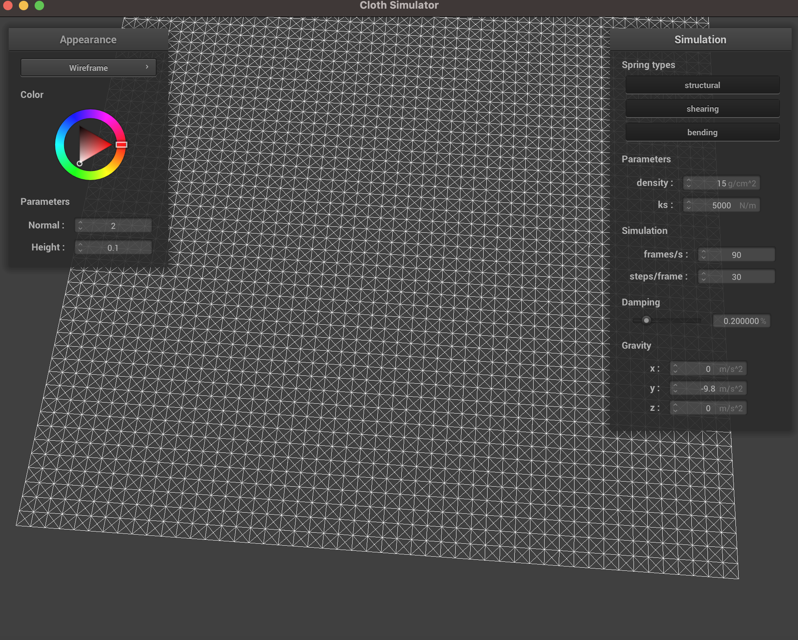
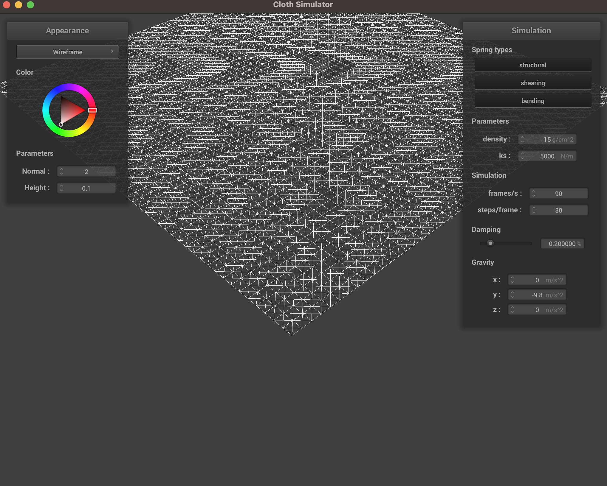
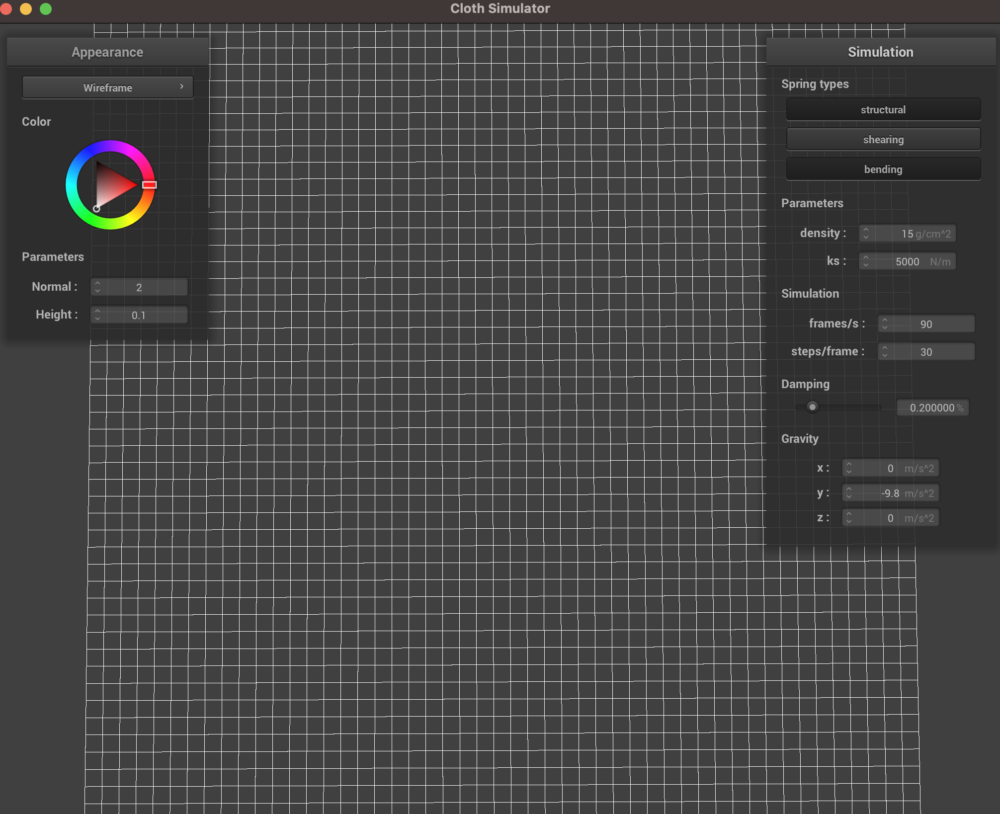
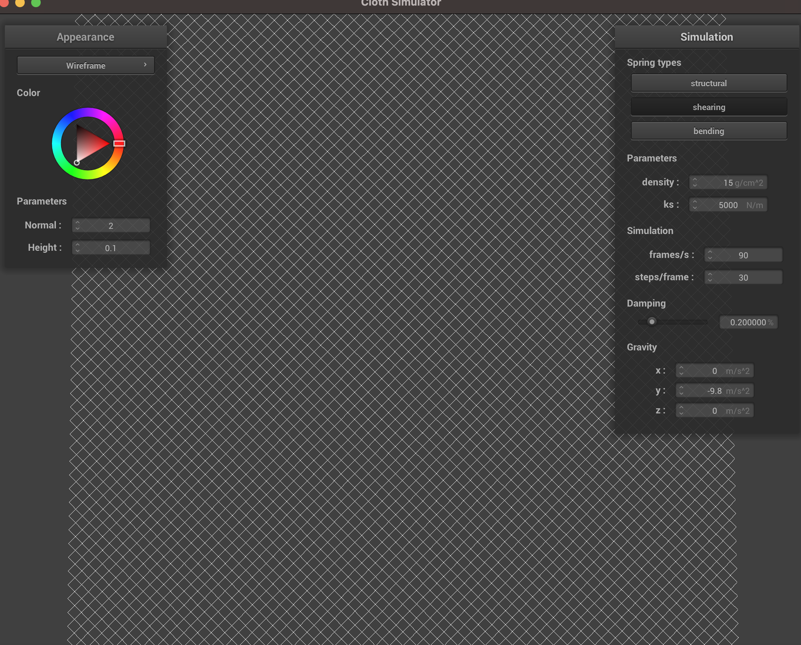
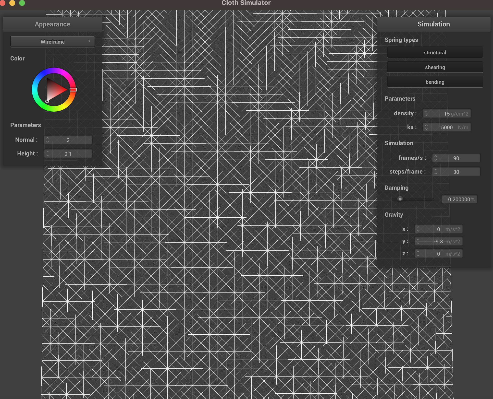
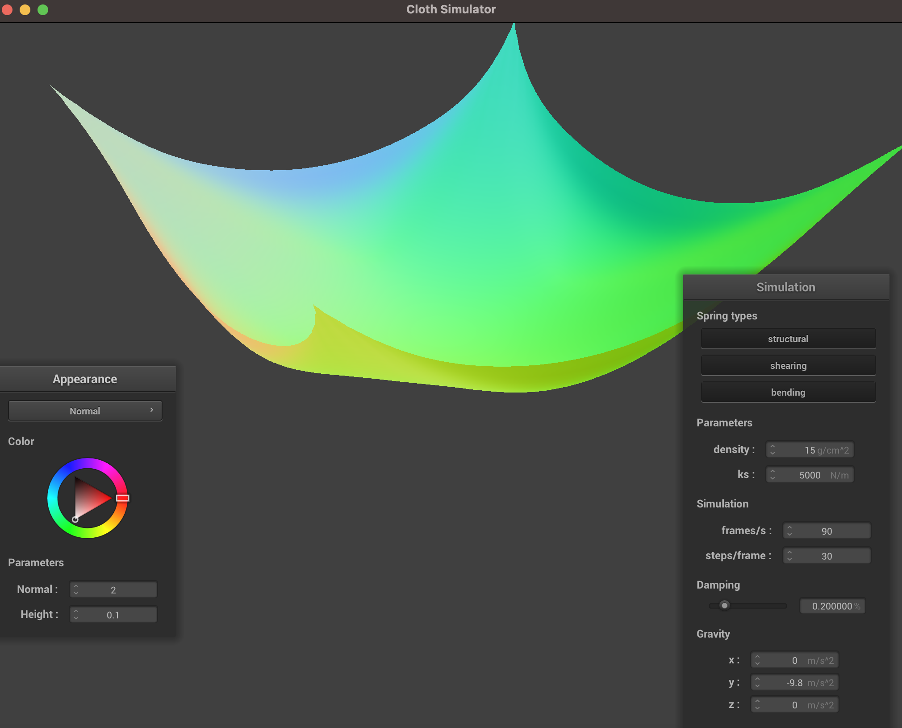

Homework 4 Writeup
Webpage Link
Homework 4 Writeup
Project Overview:
...
Part 1:
Take some screenshots of scene/pinned2.json from a viewing angle where you can clearly see the cloth
wireframe to show the structure of your point masses and springs.


Show us what the wireframe looks like (1) without any shearing constraints,
(2) with only shearing constraints, and (3) with all constraints.
Without shearing constraints:

Only shearing constraints:

All constraints:

Part 2:
Experiment with some the parameters in the simulation. To do so, pause the simulation at the start with P,
modify the values of interest, and then resume by pressing P again.
You can also restart the simulation at any time from the cloth's starting position by pressing R.
Describe the effects of changing the spring constant ks; how does the cloth behave from start to rest with a
very low ks? A high ks?
What about for density?
What about for damping?
For each of the above, observe any noticeable differences in the cloth compared to the default parameters
and show us some screenshots of those interesting differences and describe when they occur.
Show us a screenshot of your shaded cloth from scene/pinned4.json in its final resting state!
If you choose to use different parameters than the default ones, please list them.

Part 3:
Show us screenshots of your shaded cloth from scene/sphere.json in its final resting state on the sphere
using the default ks = 5000 as well as with ks = 500 and ks = 50000. Describe the differences in the results.
Show us a screenshot of your shaded cloth lying peacefully at rest on the plane.
If you haven't by now, feel free to express your colorful creativity with the cloth!
(You will need to complete the shaders portion first to show custom colors.)
Part 4:
Show us at least 3 screenshots that document how your cloth falls and folds on itself,
starting with an early, initial self-collision and ending with the cloth at a more restful state
(even if it is still slightly bouncy on the ground).
Vary the density as well as ks and describe with words and screenshots how they affect the behavior of
the cloth as it falls on itself.
Part 5:
Explain in your own words what is a shader program and how vertex and fragment shaders work together
to create lighting and material effects.
Explain the Blinn-Phong shading model in your own words. Show a screenshot of your Blinn-Phong shader
outputting only the ambient component, a screen shot only outputting the diffuse component,
a screen shot only outputting the specular component, and one using the entire Blinn-Phong model.
Show a screenshot of your texture mapping shader using your own custom texture by modifying the textures in
/textures/.
Show a screenshot of bump mapping on the cloth and on the sphere. Show a screenshot of displacement mapping
on the sphere. Use the same texture for both renders. You can either provide your own texture or use one of
the ones in the textures directory, BUT choose one that's not the default texture_2.png.
Compare the two approaches and resulting renders in your own words. Compare how your the two shaders
react to the sphere by changing the sphere mesh's coarseness by using -o 16 -a 16 and then -o 128 -a 128.
Show a screenshot of your mirror shader on the cloth and on the sphere.
Explain what you did in your custom shader, if you made one.